WES Canon - Installer le WES sur la file
Prérequis d'installation
Pour permettre le téléchargement des fichiers d'installation Canon, la limite de tampon de réponse du serveur Web IIS doit être suffisante :
-
accédez au gestionnaire des services Internet (IIS) en tant qu'administrateur ;
-
dans la liste des sites, sélectionnez votre site Watchdoc et cliquez-droit ;
-
rendez-vous dans le menu des Comportements > Propriétés relatives aux limites ;
-
augmentez la taille de la Limite du tampon de réponse :
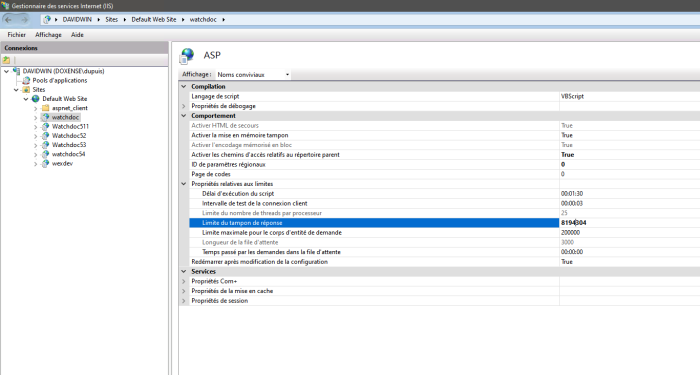
Installer le WES
-
Depuis le Menu principal de l'interface d'administration, dans la section Exploitation, cliquez sur Files d'impression, groupes de files & pools :
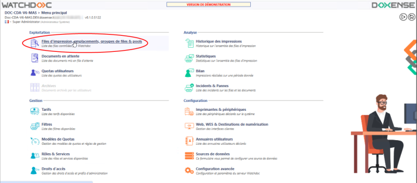
èVous accédez à la liste des Files d'impression contrôlées par Watchdoc.
-
Cliquez sur la file pour laquelle vous souhaitez installer le WES ;
-
dans l'interface de gestion de la file, cliquez sur l'onglet Propriétés :
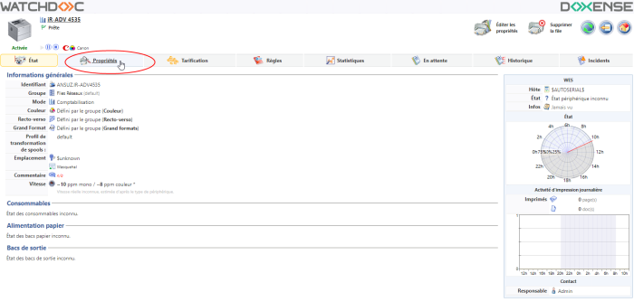
-
Dans les propriétés de la file, la section Canon MEAP apparaît. Cette section comporte plusieurs boutons :
-
Périphériques WES : donne accès à la liste des périphériques équipés d'un WES dans Watchdoc ;
-
Installer : permet à Watchdoc d'installer le WES sur le périphérique (peut prendre 30 sec.) ;
-
Activer / Désactiver les logs : permet d'activer les logs spécifiques au WES en vue d'une analyse ;
-
Télécharger les logs : permet de télécharger les logs spécifiques au WES (s'ils ont été activés) en vue d'un diagnostic ;
-
Accéder à l'interface du périphérique : raccourci vers le site web d'administration interne du périphérique ;
-
Page de configuration du WES : permet d'accéder à l'interface de configuration du WES dans Watchdoc.
-
Editer la configuration : permet d'accéder à la configuration du WES sur la file.
-
-
Cliquez sur le bouton Installer :
N.B. : avant d'installer un WES, vérifiez qu'il n'existe pas déjà ou désinstallez le précédent WES avant d'installer le nouveau.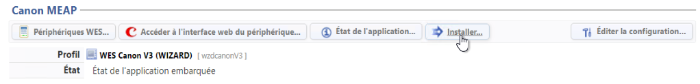
-
vous accédez à l'interface Installation manuelle requise dans laquelle l'installation est déclinée en 5 étapes :
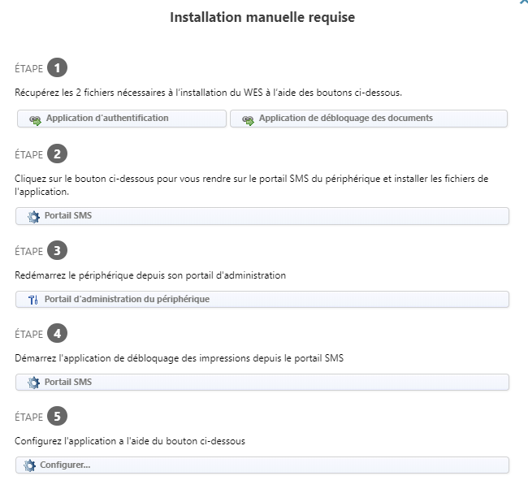
Etape 1
-
cliquez sur le bouton Application d'authentification pour télécharger le fichier canonAuthApp.jar ;
-
cliquez ensuite sur le bouton Application de déblocage des documents pour télécharger le fichier canonPpApp.jar0.
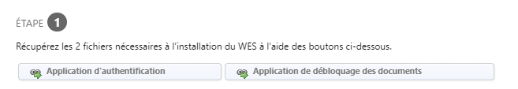
Etape 2
-
En Etape 2, cliquez sur le bouton Portail SMS pour accéder à l'interface d'administration du périphérique d'impression (Service Management Service) ;
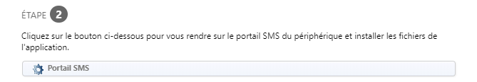
-
authentifiez-vous à l'aide des compte et mot de passe d'administration fournis par Canon® (ou cliquez sur Se connecter si les champs de saisie sont inactifs) ;
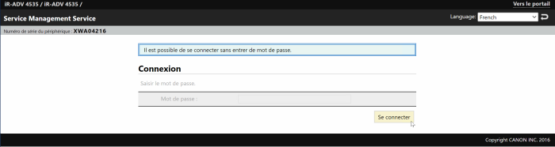
-
dans l'interface Service Management Service > menu Administration système, cliquez sur l'entrée Gestion d'applications système évoluées ;
-
dans la section Installer une application / licence système évoluée,
-
pour le paramètre Chemin du fichier de l'application système évoluée, cliquez sur le bouton Choisir un fichier et sélectionnez le fichier canonAuthApp.jar) précédemment téléchargé dans votre espace de travail ;
-
pour le paramètre Chemin du fichier de licence, cliquez sur le bouton Choisir un fichier
et sélectionnez le fichier de licence correspondant à l’application authentification téléchargé au préalable;
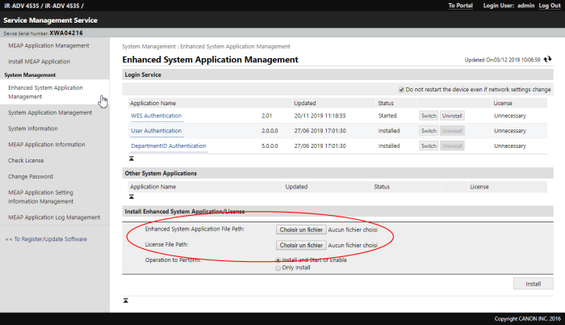
-
cliquez sur le bouton Installeret acceptez les termes de l’installation.
L'application WES Authentication s'affiche dans la liste du haut de la page.
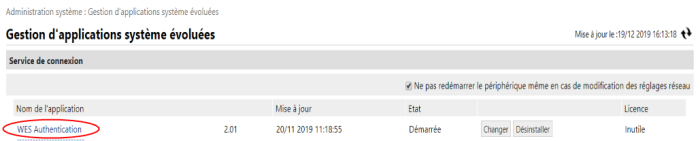
-
cliquez sur le bouton Changer correspondant à l’application installée pour l'activer.
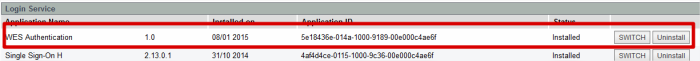
-
Le statut de l'application passe à Démarrer après redémarrage.
-
Dans le portail SMS, cliquez sur l'entrée de menu Installer une application MEAP ;
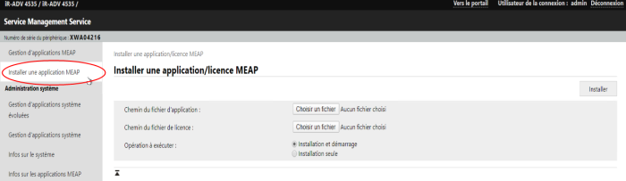
-
Dans la section Installer une application/licence MEAP ;
-
pour le paramètre Chemin du fichier d'application, cliquez sur le bouton Choisir un fichier ;
-
sélectionnez le fichier WES Pull Print_1.0.jar précédemment téléchargé dans votre espace de travail ;
-
pour le paramètre Chemin du fichier de licence, cliquez sur le bouton Choisir un fichier ;
-
sélectionnez le fichier WES_PullPrint_v1.0.lic que vous avez préalablement téléchargé .
-
-
cliquez sur Install, acceptez les termes de l’installation puis attendez qu’elle se termine.
Etape 3
-
De retour dans l'interface Watchdoc Installation manuelle requise, cliquez sur le bouton Démarrez le périphérique depuis son portail d'administration ;
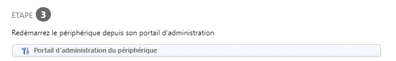
-
dans l'interface d'administration, cliquez sur Paramétrages, puis Redémarrer le périphérique ;
-
confirmez 2 fois le redémarrage du périphérique (un message vous informe que les travaux en cours seront perdus) ;
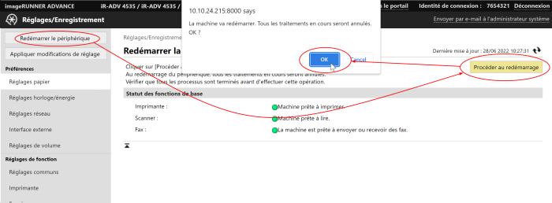
-
Attendez que le périphérique redémarre.
Etape 4
-
En Etape 4, dans l'interface Watchdoc Installation manuelle requise, cliquez sur le bouton Portail SMS;
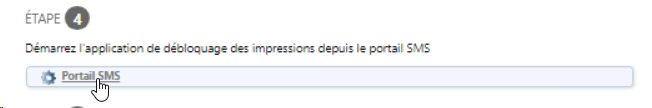
-
Dans l'interface MEAP Application Management, , cliquez sur Start pour démémarrer l'application de déblocage des impressions WES Pull Print :
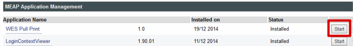
Etape 5
-
En Etape 5, dans l'interface Watchdoc Installation manuelle requise, cliquez sur le bouton Configurer ;
-
Si le WES est correctement installé, un message de succès s'affiche dans la section Etat de l'interface de configuration du profil WES :
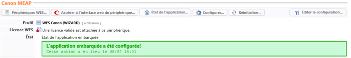
-
Lancez une impression pour vérifier le fonctionnement du WES.